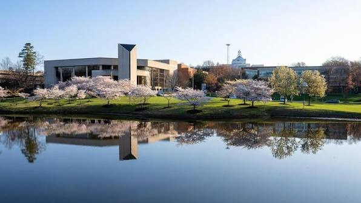

The Source - SciTech Campus
Heading straight to the MindSpa Massage chair in the Source after attending classes, meeting up with classmates for group work, and took part in campus gatherings and student life around the heart of the SciTech campus.
George Mason University • BSIT Portfolio
My George Mason experience has spanned both the Fairfax campus and the Science and Technology Campus in Manassas. Moving between lectures, group study sessions, fitness workouts, and campus events made each semester feel full and memorable.
Move your mouse over the photo below to see an alternate view and note from campus, then move your cursor away to return to the original view.

Default View: Everyday moments around George Mason University between classes and study blocks.
Heading straight to the MindSpa Massage chair in the Source after attending classes, meeting up with classmates for group work, and took part in campus gatherings and student life around the heart of the SciTech campus.
Spent time on the Science and Technology Campus in Manassas and balanced busy study schedules with active gym and recreational workouts.
Looking back at how much I have grown since transferring to Mason, I am proud of the projects I have shipped, the teamwork behind my senior capstone, and the resilience I built juggling coursework, work, and life. Heading toward graduation in Spring 2027, I am excited to bring web development, software engineering, and problem-solving skills into my next chapter.